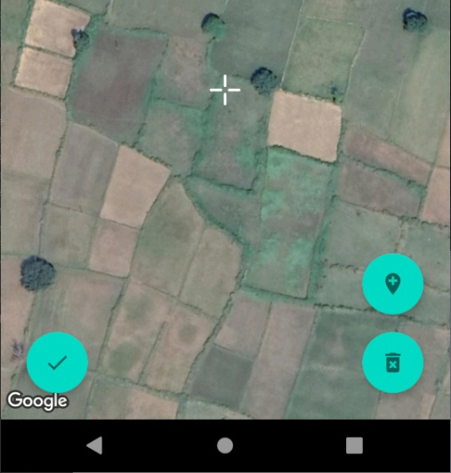

My first attempts at programming
2016, Dec
I got curious with Java when playing Minecraft, so I began trying to make something
n-sided polygon
2017, Apr
I made this after learning to do the most basic things in Java. It has inaccurate precision,
but at the time it surprised me that it even worked. I didn't even know to repaint
the screen which resulted in weird artefacts that were like sorcery to me back then.
Painting with text characters
2017, Apr
Another very simple program that I enjoyed making at the time
A very simple game
2017, May
There, I put the OOP basics I'd learnt to use
Basic 3D objects display
2017, Jul
I wanted to get a step closer to understanding how my favourite game worked. I had
no idea what a GPU even does, so it was very slow on a CPU in 1 thread. However,
I could already move and look around a couple of hardcoded objects in 3 dimensions.
I couldn't find the source code from this screenshot.
(yes, I guess I tried coding in Comic Sans back then)
Chinese characters recognition algorithm
2019, May
One day, I came up with an idea of how to compare kanji (Chinese/Japanese characters).
I was frightened by the seeming complexity of such a task, but I gave my idea a try,
and, surprisingly to me, it did work. I managed to create a recognition algorithm for
written kanji. As of 2022, computer vision, AI and image recognition still remain like
a gloomy forest to me. The algorithm I came up with is much simpler than alphabetic
scripts recognition due to the fact that kanji have a fixed number, order and direction
of strokes, and that they are written in real time, allowing the algorithm to know the
order and directions of strokes. Each stroke is compared 1-by-1 along with differences
in stroke positions for each character with the same number of strokes. An answer is
considered correct if the most similar kanji in the database is the one that user was
asked to write. Also, because I made it for a kanji-learning program, I did not need
to attempt interpreting wrongly written characters. I get a lot of credit when I tell
people about it, but it always feels to me that they overestimate the difficulty of the
task I accomplished.
Travelling salesman problem implementation
2019, Jun
I made this before the next item of this portfolio, which required an algorithm for
consequently traversing every line in a picture. I did not aim for an efficient solution,
all I needed was to avoid looping over the same lines too many times. However, it was
still pretty complicated to make, and I was really happy when I got it to work.
Drawing images with epicylces, Fourier transform
2019, Jun
This, so far, is probably the most fascinating-looking program I've made, thanks to the
beauty of mathematics which I was keen on at the time. Any looped 2D trajectory of any
complexity can be represented using epicycles which give more and more precision. That
concept is essential for audio compression and much more. This program processes any
shape (which can be derived from a drawn image automatically using the program above)
and builds a chain of epicycles, whose number can be dynamically changed, affecting the
accuracy of the resulting trail.
Kanji cards app
2019, Jul
This is the program I've developed with most passion. It uses the recognition algorithm
from a project I've made earlier, with much more focus on user interface. It was still
a couple years before I had realised how important frameworks are for serious applications.
Back then, I was wanting to develop everything on my own from scratch, only using built-in
Java runtime libraries. And so I made an element structure with OOP that was displayed
within Java's Swing framework, which I needed to get access to basic graphics operations
and event listeners. I came up with how to program transition animations on properties
like colour that are triggered on hover, for example. I even made a text field class where
I did my best to implement caret navigation and typing. It did later help me realise how
wasteful it is to ignore already existing frameworks that can take care of countless things,
such as keyboard input & layouts, HiDPI, system themes, RTL, animations and optimisation.
However it did look special and personal, just the way I liked in a lot of ways, and I'm
still happy I made it, though I wouldn't do it again.
I've spent almost the entire 2020 tracking what I spend my time on, for what I've developed
a program. It represents everything on a timeline that can be zoomed in and out to any level.
It allowed me to see exactly how I spent my days. I was really obsessed with managing my time,
and by the end of the year I gave up on it because the pressure I was putting on myself was
not helping. But I still like that idea and I'm planning to reimplement it in a React web
application to continue doing it to strive for the least time spent on semiconscious and
self-harming behaviour.

Through lucky circumstances, I was invited to work on a couple of Android projects when I was
only 15. I developed frontend applications which farmers used to collect and centralise various
data about fields. Shown on the screenshots is viewing and creating (marking) fields atop
imagery by Google Maps.
Perspective distortions
2021, Oct
I was thinking a lot about my few year-old ideas about filtering an output image to create an
illusion of the screen being constantly pointer at the viewer. I finally implemented them in
October 2021. The setup should ideally require good 3D tracking devices, anaglyph glasses and
a giant display (probably a white wall and a projector). I didn't have any of that, so I only
made more of a "proof of concept." In order to track the viewer's location, I made an Android
application (on the same phone on which the video was recorded) to track its rotation. The
calculations assumed that the distance between the centre of the screen and the camera is
constant, as well as the camera being pointed at the screen. It was the easiest to get
approximate phone location this way, but of course it wasn't very accurate, and I didn't even
have a flat screen, Wi-Fi delay was also a factor. However I still enjoyed it very much. I'm
not that good with math anymore as it was more of a temporary hobby that I don't do so much now.
Side-by-side photo selector
2022, Sep
This one is not so complex, it just was a lot of pain with CSS. I've made this app to go through
all of my photos, compressed with different levels of quality to see where I want to preserve
more detail and where to save more space. I ended up decreasing the total size of my gallery
by a factor of a dozen or two (given poor initial compression).